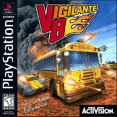

Vigilante 8

Vigilante 8 é um jogo de combate de veículos de 1998 publicado pela Activision para PlayStation, Nintendo 64 e Game Boy Color. Embora oficialmente não tenha conexão com a série Interstate '76, ela apresenta vários de seus temas, incluindo auto-vigilantes, o período de tempo dos anos 1970 e empresas específicas de veículos fictícios. Suas versões para consoles domésticos receberam críticas favoráveis e foram seguidas por Vigilante 8: 2nd Offense em 2000. Um remake foi lançado como Vigilante 8 Arcade dez anos depois.